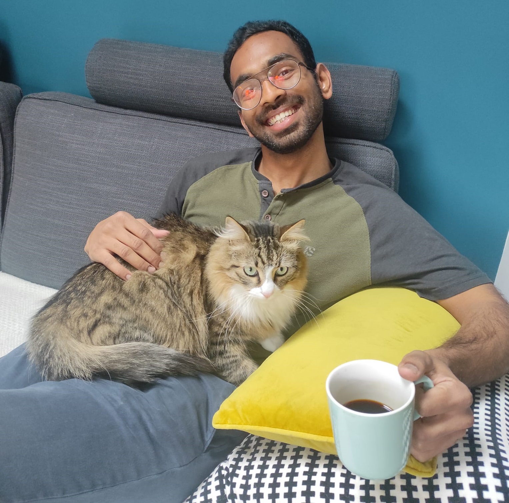
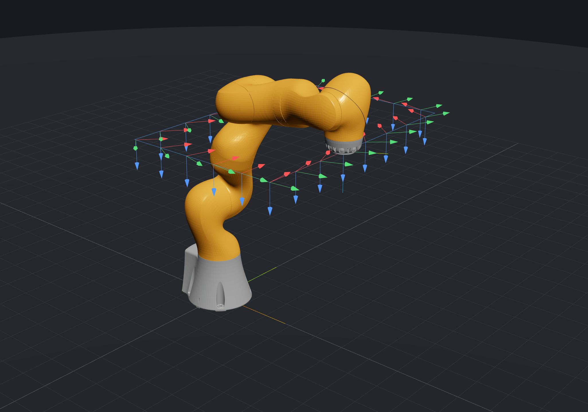

Kinematic intelligence
Learning that understands the robot.
How can a demonstrated skill adapt to robots with different bodies and constraints?
Explore this topicHello, I’m
I’m a robotics researcher, preparing to join CNRS as a permanent researcher.
I study how a robot’s geometry shapes the way it moves, learns, and interacts with the world. My work connects kinematics, robot learning, and mechanism design.

A little background PhD at LS2N, Nantes · Postdoctoral research at LASA, EPFL
For students01 / What I work on
Three connected areas, each with a different question to explore.
Kinematic intelligence
How can a demonstrated skill adapt to robots with different bodies and constraints?
Explore this topicGeometry & motion planning
How do configurations, singularities, and joint limits determine which motions are possible?
Explore this topicMechanism design
How can the geometry of a robot or a new joint make useful movement possible?
Explore this topic02 / Recent research
What if a skill learned through demonstration could travel between robots with different kinematic structures?
Classifying cuspidal behavior in special classes of 7R robots.
03 / Current investigations
Geometric methods
Exploring conformal geometric algebra to understand robot geometry.
See the projectRobot design
Investigating novel kinematic actuation and mechanically intelligent robot architectures.
See the projectLearn & explore
Start with the course. Follow a question from a simple model to the geometry of a real robot.

Get in touch
If you’re a student exploring these topics, a researcher with a related question, or an industry partner with a robotics problem, I’d be glad to hear from you.